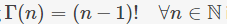
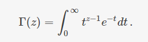
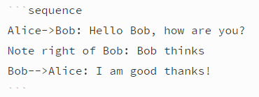
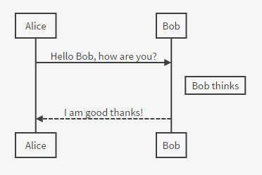
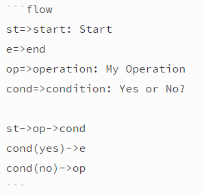
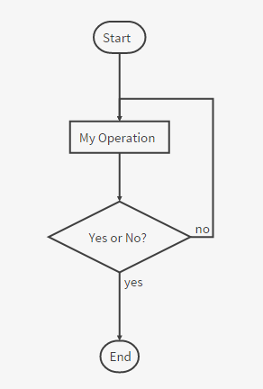

Markdown 高级语法
只有少数编辑器支持，使用前请先确认。
定义列表
Term 1
Term 2
: Definition A
: Definition B
会被编译成
<dl>
<dd>Term 1</dd>
<dd>Term 2</dd>
<dt>Definition A<dt>
<dt>Definition A<dt>
</dl>
目录
通过[TOC]标记来插入目录。
TeX公式
内联的TeX公式使用一个美元符号标记。
$\Gamma(n) = (n-1)!\quad\forall n\in\mathbb N$
会被编译成

TeX公式块用独占一行的两个美元符号来标记。
$$
\Gamma(z) = \int_0^\infty t^{z-1}e^{-t}dt\,.
$$
会被编译成

如果你的编辑器不支持这个功能，可以手动解决。首先引入mathjax脚本：
<script type="text/javascript" src="https://cdn.mathjax.org/mathjax/latest/MathJax.js?config=TeX-AMS_HTML"></script>
之后，在需要插入公式的地方使用<script>标签包裹公式：
<script type="math/tex">\Gamma(n) = (n-1)!\quad\forall n\in\mathbb N</script>
<script type="math/tex; mode=display">
\Gamma(z) = \int_0^\infty t^{z-1}e^{-t}dt\,.
</script>
TeX的语法参考请见这里。
UML图
可以像这样来画uml时序图：


这是uml流程图：

